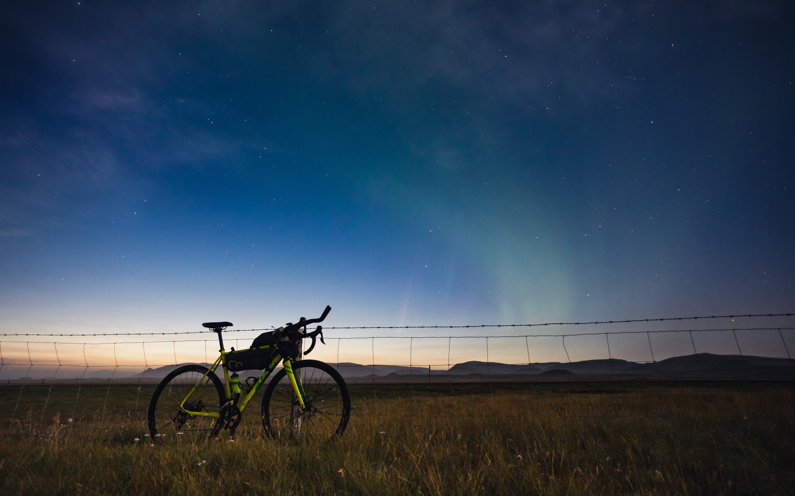
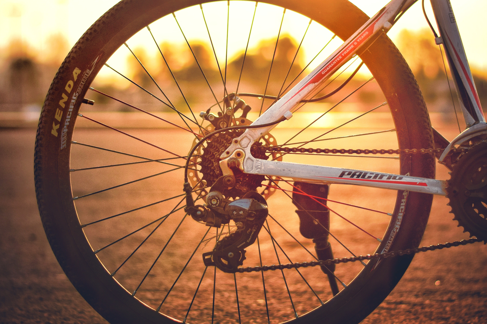
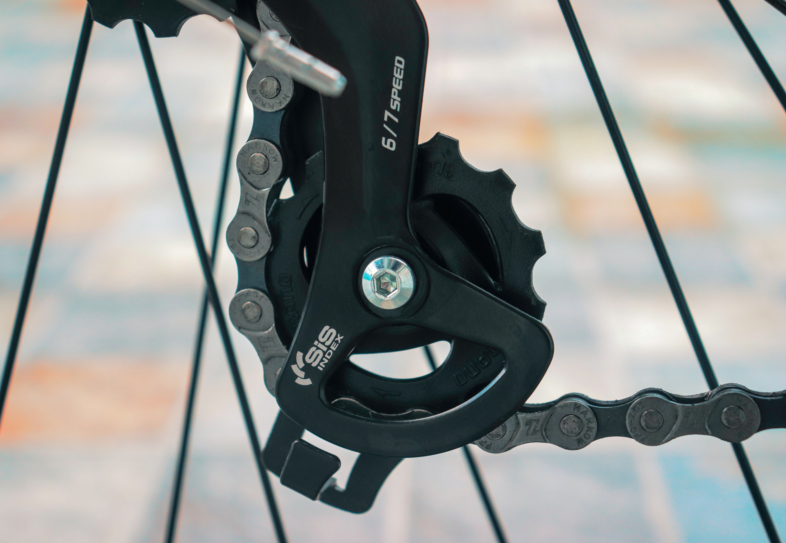
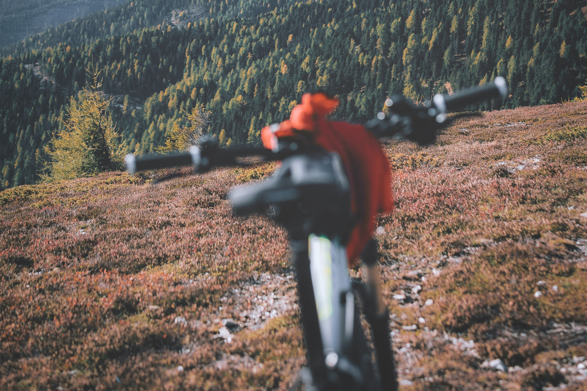

Why choose MTB's?
Many people are choosing Mountain bikes for their rides. Here's a article saying why choose MTBs when.........

Perfect Seat height for you!
Picking the suitable seat height is a absolute chaos. Though our friends will help with this one, it's not a 100% solution. So here's what to do.........
Does the Tooth Count matters?
There are plenty of hubs with different tooth counts are out there in the market. But what are all these non-sense about tooth counts and which one will be yours Lovely...........
Ever wonder what's Cassettes and Freewheel?
Whenever you went out there and buy some tools for your bikes, you might've come across these words, "Cassettes Or Freewheel Man!". Here's what that means.........

Brake Maintenance
Phew! Cleaning the brakes aren't everyone's cup of cake. Cleaning it with degreaser, whip it, fitting it again and not to mention the tool deficiency we got there by the way.........

Top 10 Derauillers 2022
Planning to buy a Derauiller for your bike. No matter which bike you got. It can be MTbs, Road Bikes, Hybrids. Here's the thing..............

How to True the Wheels?
Truing the wheels aren't a easy job for everyone. Here's the easiest way to true your wheels and the necessary tools required for them. This is a step by step guide to..........

Threaded or Threadless forks!
Ever wondered what do these terms threaded and threadless forks means! Absolutely this is one of the factors that influence your driving comfort with.........

Shinamo's Acero new model launched in China
After the tourney series Shinamo launches it's another premium series Derauillers Acero with e-shifters. Here's the full review.........